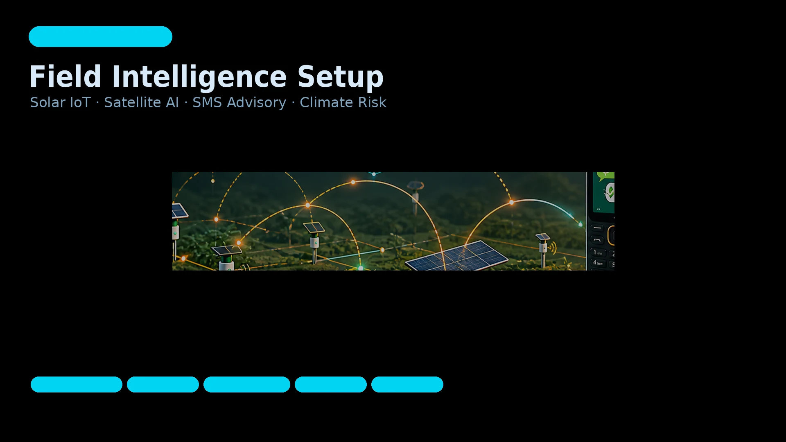
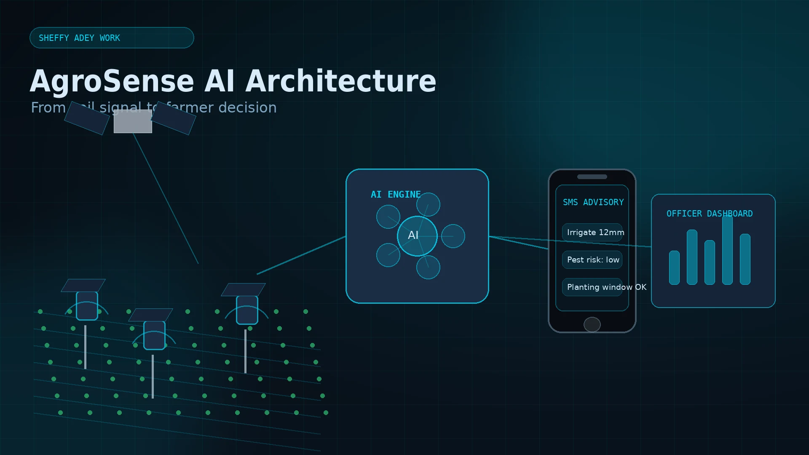

Our work is scoped around deployment realities: power budgets, unstable networks, data quality, security, field conditions, and the client's ability to operate the system after handover. These summaries reflect what was actually built, constrained, and delivered.
AgroSense AI is a Sheffy Adey venture applying solar IoT, satellite intelligence, and AI advisory to smallholder farming. The platform is designed to help farmers make better decisions under unpredictable climate conditions by combining low-cost soil sensing, LoRaWAN connectivity, weather and satellite data, and SMS-first advisory delivery.
Smallholder farmers increasingly face unpredictable rainfall, shifting pest cycles, changing planting windows, and pressure to use water and inputs more efficiently. Yet many farming communities still lack access to plot-level intelligence, reliable connectivity, or tools designed for off-grid conditions.
AgroSense AI connects field data to practical daily guidance. Solar-powered soil sensors monitor plot conditions, LoRaWAN networks move data across low-power rural deployments, satellite imagery adds crop and climate context, and AI models translate the signals into simple recommendations for farmers and extension officers.
AgroSense AI reflects Sheffy Adey’s core engineering strengths: field-ready IoT, solar-powered infrastructure, data intelligence, rural connectivity planning, and practical deployment in constrained environments. It is not just a farm app; it is a last-mile climate intelligence system designed for communities where smartphones, broadband, and stable power cannot be assumed.


A distributed low-power sensor mesh deployed across high-traffic urban zones, producing geofenced air quality events, fleet-level monitoring, and a cloud analytics pipeline — purpose-built for city-scale environmental monitoring without continuous connectivity.
A local authority environmental programme required fine-grained air quality monitoring across high-footfall and high-traffic zones. Existing infrastructure provided city-level averages from a small number of static reference stations — insufficient for identifying pollution hotspots at street level or triggering hyperlocal alerts.
No deployable sensing solution existed at the required density and cost point. Reference station data was too coarse for zone-level decision making. The programme needed a pilot system that could demonstrate street-level resolution, continuous uptime in outdoor conditions, and cloud-connected analytics within a grant milestone window.
Full-stack engagement from sensor selection and power budgeting through firmware, cloud pipeline, dashboard, and handover pack. We selected sensor array, wrote firmware with local store-and-forward and OTA update capability, designed the AWS IoT Core telemetry pipeline, and built the Grafana dashboard with geofenced anomaly alerting. Engagement closed with a written handover pack and a recorded operator training session.
Environmental monitoring at street resolution requires hardware designed for long-term unattended operation — not adapted office sensors. This engagement demonstrates capacity to design for real field conditions: power constraints, connectivity dropout, enclosure requirements, and operator handover — not just a connected prototype that works in a controlled setting.
An on-device anomaly detection system for rotating industrial equipment — combining vibration and thermal sensing with edge inference to score motor health in real time, trigger operator alerts, and reduce unplanned stoppages without requiring cloud connectivity at the point of detection.
A light manufacturing operation was experiencing recurring unplanned downtime from motor and drivetrain failures. Maintenance was reactive: failures were discovered when equipment stopped, not before. The team had no condition monitoring in place and limited technical resource to deploy or maintain a complex system.
Standard vibration monitoring solutions required network connectivity at the machine level — impractical on the factory floor. Cloud-first approaches introduced unacceptable latency for safety-relevant alerts. The client needed a system that could detect anomalous motor behavior locally and alert operators in near-real-time, with telemetry batched to the cloud for fleet-level trend analysis.
Sensor selection, enclosure specification, firmware development, edge model design and compression, cloud telemetry pipeline, Grafana dashboard, and full governance pack. We designed a lightweight anomaly scoring model trained on baseline vibration signatures, quantized to INT8 and deployed to the STM32 target. Threshold and alert logic were tuned in close collaboration with the maintenance lead during a 2-week calibration period on live equipment.
Predictive maintenance in constrained industrial environments requires edge-first inference design — not a cloud model with a local sensor attached. This engagement shows the capacity to design models within MCU memory budgets, tune detection thresholds against real operational signatures, and produce a system that operators can interpret and trust. That combination is what separates a working pilot from a demo.
A GPS-enabled temperature and humidity monitoring system for pharmaceutical transport, producing tamper-evident excursion records, immutable compliance event logs, and edge-triggered alerts — designed to meet regulatory traceability obligations across a multi-country distribution network.
A pharmaceutical logistics operator needed to demonstrate end-to-end temperature chain integrity across a multi-country distribution network. Regulatory requirements demanded a complete, tamper-evident record of environmental conditions at each stage of transit — from cold store dispatch to final delivery confirmation. Existing paper-based and USB logger processes produced incomplete records and created gaps that triggered compliance queries.
The operator's current monitoring approach failed to produce continuous records during transit. USB loggers were retrieved only on delivery. Excursion events were identified retrospectively, with no location context, making root cause identification and regulatory reporting difficult. The system needed to produce real-time excursion alerts, GPS-correlated records, and a compliance-ready audit trail without relying on uninterrupted internet connectivity across international logistics routes.
Hardware specification, firmware development, cloud pipeline design, compliance event schema, dashboard, and handover pack. We specified the nRF9160-based device with multi-band LTE-M/NB-IoT and GNSS, implemented a store-and-forward firmware with local cryptographic signing of excursion events, and designed the Azure IoT Hub pipeline with Power BI compliance reporting. Engagement included a 2-week transit simulation test before deployment across the 4-country pilot network.
Cold chain compliance is not solved by connectivity — it is solved by guaranteed local record integrity when connectivity fails. This engagement demonstrates the capacity to design cryptographically sound offline logging, multi-country connectivity handling, and compliance-ready reporting structures that satisfy regulatory reviewers — not just operations teams. The handover documentation was structured to support regulatory submission directly.
If you need measurable, documented outcomes from a system designed for real operating conditions — tell us the constraints. We will confirm whether and how we can help before any scope is proposed.
First call is 45 minutes. We confirm fit before scope is proposed.